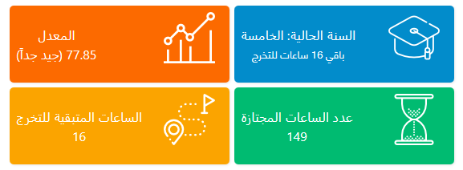

حساب معدل طلاب المعلوماتية في الجامعة الافتراضية السورية
تساعد هذه الإضافة البرمجية في حساب المعدل لطلاب الجامعة الافتراضية - اختصاص الهندسة المعلوماتية بشكل تلقائي, كما يتم حساب عدد الساعات المنجزة وعدد الساعات المتبقية للتخرج وتحديد السنة الحالية للطالب. التركيب سهل وبسيط تابع الخطوات
طريقة التركيب
-
تركيب إضافة Tampermonkey
وهي إضافة مدعومة من قبل العديد من متصفحات الانترنت لذلك تم اعتمادها مؤخراً لتكون القالب الأساسي لإضافة حساب المعدل. تدعم هذه الإضافة كل من المتصفحات التالية: Chrome, Microsoft Edge, Safari, Opera Next, and Firefox. وهذا يعني أن إضافة حساب المعدل ستعمل من الآن فصاعداً على كل هذه المتصفحات. ادخل إلى الموقع الرسمي للإضافة على الرابط التالي:
 tampermonkey
tampermonkey
بعد الدخول سيتم نقلك مباشرة إلى التبويب المناسب لمتصفحك. قم بتثبيت هذه الإضافة ثم انتقل للخطوة التالية
-
تركيب سكربت حساب المعدل
بعد تركيب الإضافة الآن سنقوم بتركيب السكربت وكل ما عليك هو الدخول إلى الرابط التالي سكربت حساب المعدل ثم تجد زر بعنوان تثبيت أو install اضغط عليه فيتم التركيب
هذا كل شيء. ادخل الآن إلى صفحة العلامات في موقع الجامعة وستجد معدلك والسنة الحالية والساعات المتبقية للتخرج وعدد الساعات المجتازة
في حال وجود أي تحديث سيتم بشكل تلقائي. أو بسهولة اضغط على أيقونة Tampermonkey ثم اضغط على Check for userscript updates وفي حال وجود أي مشكلة يمكنكم التواصل معي لتعديل الإضافة